材料 4個分
※粉量を変えると自動計算されます
生地
茹でる用(ラウゲン液)
トッピング
作り方
生地
STEP 1
ホームベーカリーで生地を作る
ホームベーカリーに材料をセットして「生地コース」を選べば、生地作りから一次発酵までお任せできます。コースが終わったら、生地の状態を確認して次の作業に進みます。
ホームベーカリーに材料をセットして「生地コース」を選べば、生地作りから一次発酵までお任せできます。コースが終わったら、生地の状態を確認して次の作業に進みます。
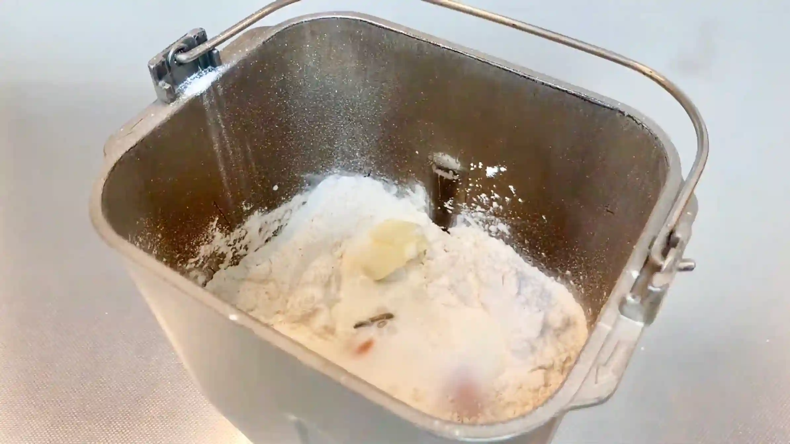
STEP 2
生地を取り出し4分割して丸め、ラップをして常温で15分おく
分割した生地は、表面がなめらかになるように軽く丸めておきます。ここで生地を休ませることで、次の工程で生地を伸ばしやすくなります。
分割した生地は、表面がなめらかになるように軽く丸めておきます。ここで生地を休ませることで、次の工程で生地を伸ばしやすくなります。
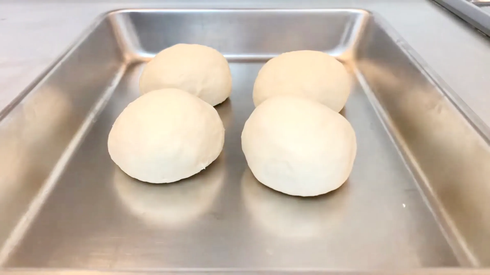
STEP 3
生地を12㎝程の大きさに平らに広げる
丸めた生地のとじ目を上にして置き、中央から手でやさしく押し広げて平らにしていきます。とじ目のないきれいな面を下にしておくと、成形したときに表面がきれいに仕上がります。
丸めた生地のとじ目を上にして置き、中央から手でやさしく押し広げて平らにしていきます。とじ目のないきれいな面を下にしておくと、成形したときに表面がきれいに仕上がります。
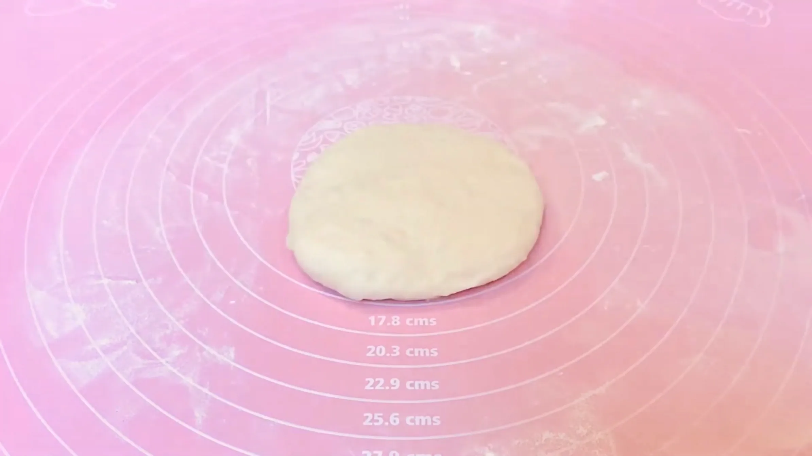
STEP 4
生地の奥1/3、手前1/3を折りたたむ
生地がベタつくと、ついつい焦って打ち粉をたくさんかけがちですが、粉が多いと折りたたんだ生地同士がくっつかなくなります。そのため、打ち粉は最小限に抑え、落ち着いてゆっくり作業するのがおすすめです。
生地がベタつくと、ついつい焦って打ち粉をたくさんかけがちですが、粉が多いと折りたたんだ生地同士がくっつかなくなります。そのため、打ち粉は最小限に抑え、落ち着いてゆっくり作業するのがおすすめです。
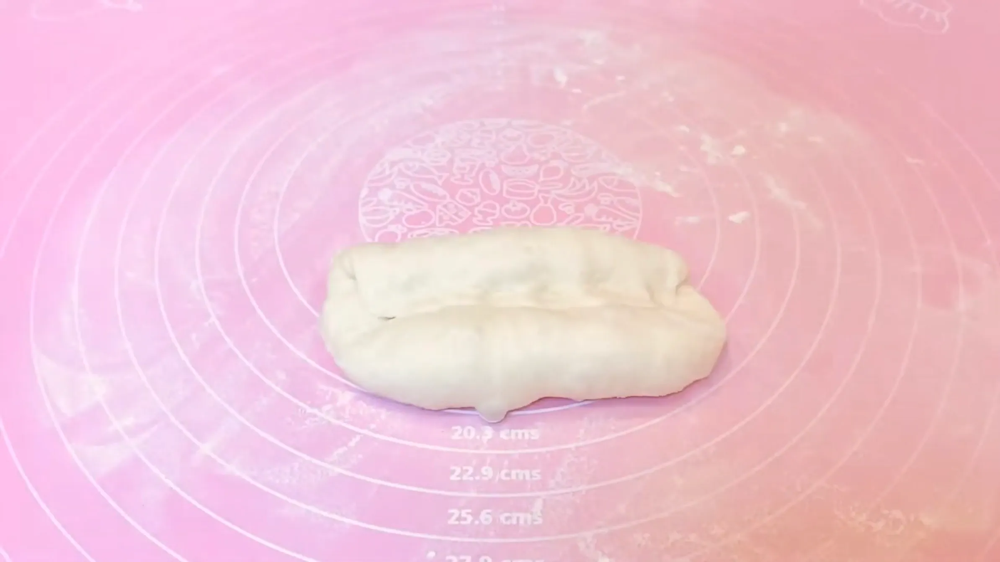
STEP 5
生地を張らすように端と端をくっつける
生地の表面を軽く張らせるように整えることで、焼き上がったときに表面がきれいに仕上がります。とじ目が開いてこないように、両端までしっかりと閉じておきます。
生地の表面を軽く張らせるように整えることで、焼き上がったときに表面がきれいに仕上がります。とじ目が開いてこないように、両端までしっかりと閉じておきます。
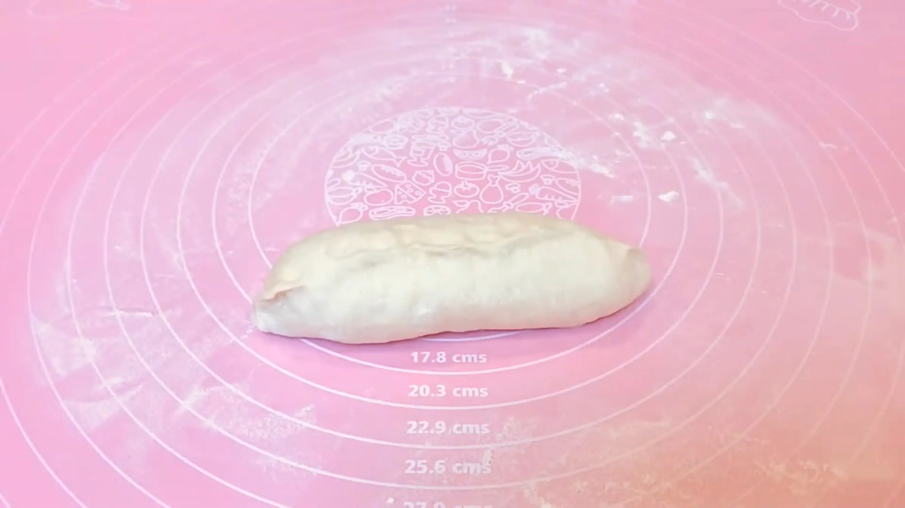
STEP 6
閉じめを下にして生地をオーブンシートにのせる
この後重曹液でゆでるときに生地を持ち上げやすいよう、オーブンシートにのせておきます。シートごと移動させることで、せっかく整えた形を崩さずに扱えます。
この後重曹液でゆでるときに生地を持ち上げやすいよう、オーブンシートにのせておきます。シートごと移動させることで、せっかく整えた形を崩さずに扱えます。
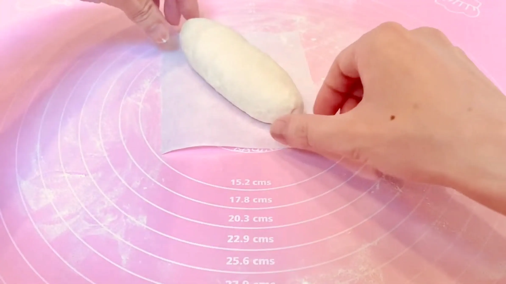
STEP 7
ラップをして常温で30分おく
生地を少し休ませて、成形後の発酵を進めます。ラウゲンシュタンゲはこの後、重曹液でゆでてから焼くため、ここで発酵させすぎないこともポイントです。生地がひと回りふっくらしたくらいを目安にします。
生地を少し休ませて、成形後の発酵を進めます。ラウゲンシュタンゲはこの後、重曹液でゆでてから焼くため、ここで発酵させすぎないこともポイントです。生地がひと回りふっくらしたくらいを目安にします。
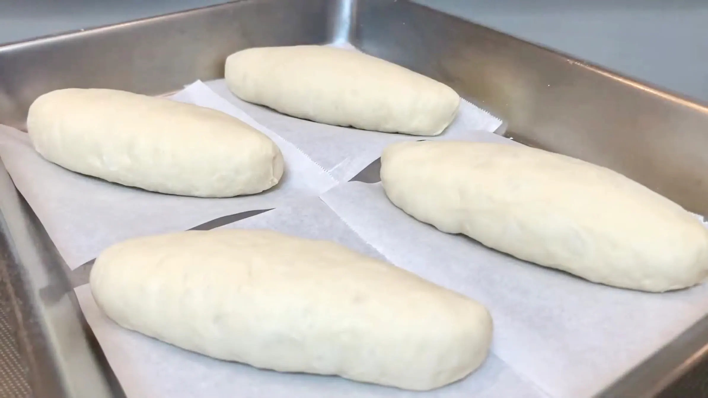
STEP 8
オーブンを210℃で予熱する
重曹液でゆでた生地をすぐに焼けるよう、このタイミングでオーブンをしっかり予熱しておきます。
重曹液でゆでた生地をすぐに焼けるよう、このタイミングでオーブンをしっかり予熱しておきます。
STEP 9
お湯（85〜90℃くらい）に重曹を入れる
本来はラウゲン液を使いますが、家庭でも手軽に作れるよう、ここでは重曹を使います。重曹を溶かしたお湯に生地をくぐらせることで、焼成後にラウゲンシュタンゲ特有の香ばしい風味と色づきが生まれます。
本来はラウゲン液を使いますが、家庭でも手軽に作れるよう、ここでは重曹を使います。重曹を溶かしたお湯に生地をくぐらせることで、焼成後にラウゲンシュタンゲ特有の香ばしい風味と色づきが生まれます。
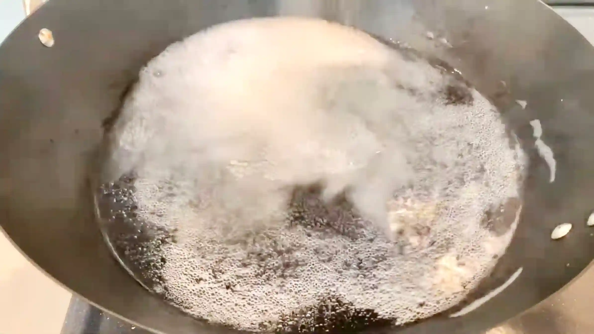
STEP 10
生地を片面30秒ずつ、計1分ゆでる
生地をお湯に入れたらオーブンシートを外し、片面ずつゆでて、全体に重曹液が行き渡るようにします。ゆですぎると表面にシワができやすいため、片面30秒を目安に手早く行います。
生地をお湯に入れたらオーブンシートを外し、片面ずつゆでて、全体に重曹液が行き渡るようにします。ゆですぎると表面にシワができやすいため、片面30秒を目安に手早く行います。
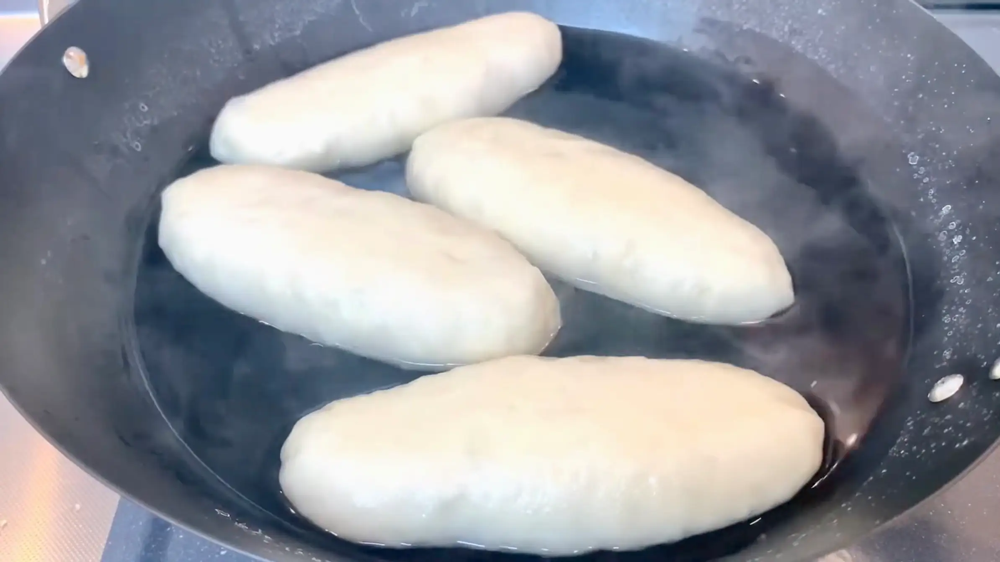
STEP 11
クープを入れ、お好みで塩をかける
クープを入れることで、焼成中に生地が膨らむ力を逃がし、焼き上がりにきれいな切れ目が入ります。表面の形を整えるような気持ちで、クープは深く切りすぎずに入れましょう。仕上げにお好みで塩をのせます。
クープを入れることで、焼成中に生地が膨らむ力を逃がし、焼き上がりにきれいな切れ目が入ります。表面の形を整えるような気持ちで、クープは深く切りすぎずに入れましょう。仕上げにお好みで塩をのせます。
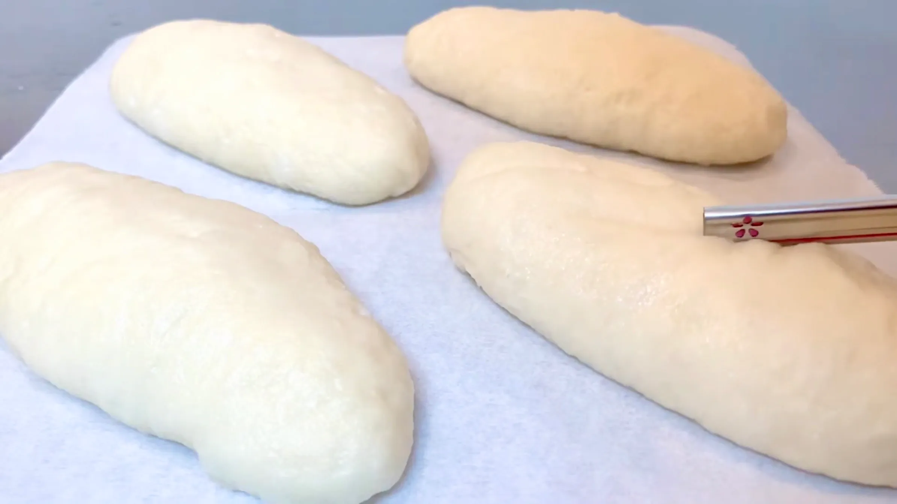
STEP 12
オーブン210℃で15分〜20分焼く
重曹液にくぐらせた生地は、焼成すると表面が濃く香ばしい色に焼き上がります。焼き色を確認しながら、15〜20分を目安に焼き上げます。オーブンによって焼き色の付き方が異なるため、表面がしっかり色づいたところで焼き上がりを判断してください。
重曹液にくぐらせた生地は、焼成すると表面が濃く香ばしい色に焼き上がります。焼き色を確認しながら、15〜20分を目安に焼き上げます。オーブンによって焼き色の付き方が異なるため、表面がしっかり色づいたところで焼き上がりを判断してください。
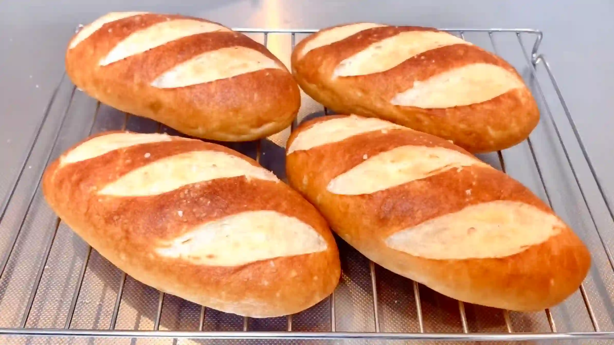
動画でチェック
おいしく作るためのワンポイントコラム
本場のパン屋さんが使うのは、水酸化ナトリウムの水溶液『ラウゲン液』。独特の焼き色と香りのもとですが、おうちではなかなか手に入りません。そこで今回は、重曹で代用して『ラウゲンシュタンゲ』を作ります。
プレッツェルのような香ばしい皮をまとったドイツのパンを、おうちで手軽に楽しむための3つのコツをまとめました。
① 成形のコツ
生地を折り返してコッペパン型に成形する際は、閉じ目をしっかりと密着させることが大切です。手のひらの付け根部分（胃の具合が悪い時に手でお腹を押さえますよね、あの手の部分です）を使ってグッと生地を押し込み、中にしっかりと芯を作るように巻き込んでから閉じます。こうすることで、茹でたり焼いたりする際に形が崩れるのを防ぎます。
② ラウゲン液の代用
本場のパン屋さんでは水酸化ナトリウムの水溶液を使いますが、おうちではなかなか入手しづらい材料ですよね。そこで、手軽に手に入る重曹で代用します。重曹は70度以上のお湯に溶かすことで強アルカリ性へと変化し、独特の焼き色と香りを生み出す優れもの。85〜90℃の温度をキープしながら片面30秒ずつ茹でることで、表面がシワシワになるのを防ぎます。
③ 焼成のコツ
茹で上がったらすぐさま次の工程へ進みます。すばやく深めのクープを入れ、アクセントになるトッピングの塩（岩塩は見た目も可愛くおすすめですが、普通のお塩でもとってもおいしいです）を忘れずにパラリと振ってください。あらかじめ予熱しておいたオーブンを使い、210℃で15分〜20分と高めの温度で一気に短時間で焼き上げるのが、表面を香ばしく仕上げるポイントです。
オーブンの予熱や茹でる工程など、焼成に入る前は少しバタバタしますが、多少失敗しても全然大丈夫です！安全第一。火傷など怪我がないよう、焦らずに作業することが大切ですね。一口食べれば独特の旨味と程よい塩気が広がる、最高の一品。
プレッツェルのような香ばしい皮をまとったドイツのパンを、おうちで手軽に楽しむための3つのコツをまとめました。
① 成形のコツ
生地を折り返してコッペパン型に成形する際は、閉じ目をしっかりと密着させることが大切です。手のひらの付け根部分（胃の具合が悪い時に手でお腹を押さえますよね、あの手の部分です）を使ってグッと生地を押し込み、中にしっかりと芯を作るように巻き込んでから閉じます。こうすることで、茹でたり焼いたりする際に形が崩れるのを防ぎます。
② ラウゲン液の代用
本場のパン屋さんでは水酸化ナトリウムの水溶液を使いますが、おうちではなかなか入手しづらい材料ですよね。そこで、手軽に手に入る重曹で代用します。重曹は70度以上のお湯に溶かすことで強アルカリ性へと変化し、独特の焼き色と香りを生み出す優れもの。85〜90℃の温度をキープしながら片面30秒ずつ茹でることで、表面がシワシワになるのを防ぎます。
③ 焼成のコツ
茹で上がったらすぐさま次の工程へ進みます。すばやく深めのクープを入れ、アクセントになるトッピングの塩（岩塩は見た目も可愛くおすすめですが、普通のお塩でもとってもおいしいです）を忘れずにパラリと振ってください。あらかじめ予熱しておいたオーブンを使い、210℃で15分〜20分と高めの温度で一気に短時間で焼き上げるのが、表面を香ばしく仕上げるポイントです。
オーブンの予熱や茹でる工程など、焼成に入る前は少しバタバタしますが、多少失敗しても全然大丈夫です！安全第一。火傷など怪我がないよう、焦らずに作業することが大切ですね。一口食べれば独特の旨味と程よい塩気が広がる、最高の一品。


独特の香ばしさと深い焼き色が魅力的なドイツパン『ラウゲンシュタンゲ』のレシピです！手軽な材料で、あのプレッツェルのような味わいを再現します。まるでジブリの世界から飛び出してきたような可愛いパンを、ぜひ一緒に焼いてみませんか？コラムでは「成形のコツ」「ラウゲン液の代用」「焼成のコツ」の3つのコツをご紹介します。